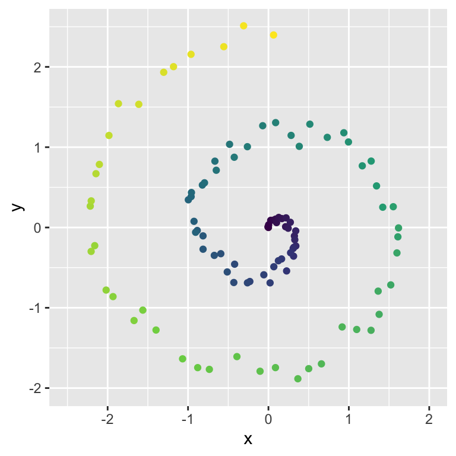
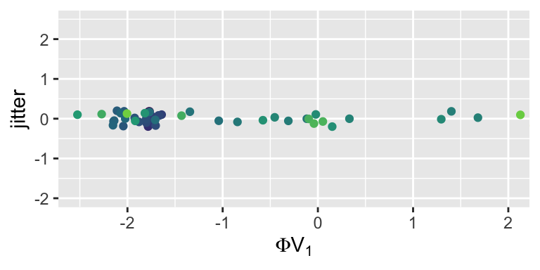

Lecture 13: Dimensionality Reduction, Introduction to Unsupervised Learning
Author
Geoff Pleiss
Published
November 6, 2025
Learning Objectives
By the end of this lecture, you should be able to:
Formulate methods for dimensionality reduction through singular value decompositions.
Implement and derive PCA and kPCA, and explain their geometric intuition.
Identify scenarios where PCA versus kPCA is more applicable.
Describe the uses of PCA and kPCA for data analysis.
Enumerate the differences between supervised and unsupervised learning.
Motivation
Despite the curse of dimensionality for distance-based predictive models, we saw that not all high dimensional data was doomed to fail with kNN or kernel ridge regression.
I claimed that these methods are immune from the curse of dimensionality when the data are “intrinsically low-dimensional”.
Today, we will define what “intrinsically low-dimensional” means, and how to find such low-dimensional structure in high-dimensional data.
The methods that will discover this low dimensional structure are the first unsupervised learning methods we will study in this course.
Low-Dimensional Structure Through Variable Reduction
We’ve seen two examples of exploiting low-dimensional structure in high-dimensional data: variable selection/Lasso regression.
Both methods work because certain covariates are not sufficiently relevant for predicting the response, and so they can be dropped.
What results is a reduction to \(<p\) covariates, reducing the dimensionality of the input space.
But what if all \(p\) covariates are relevant? It is still possible to have low-dimensional structure by applying a rotation to our covariates!
Low-Dimensional Structure Through Rotations + Variable Reduction
Consider the seats in this lecture hall, which live in a three dimensional space.
To describe the position of each seat, we need an \(x\), \(y\), and \(z\) coordinate.
However, I would argue that the seats really only live in a two-dimensional space, since the column and height of the seats are highly correlated.
If we were to rotate our coordinate system, we could find a two-dimensional plane that all of the seats lie close to.
Using the language of STAT306, the \(y\) and \(z\) variables are colinear, and thus can be reduced into a single variable.
Why are Rotations Valid?
Imagine that we have a linear model \(\hat f_{\mathcal D}(X) = X^\top \hat \beta\).
A rotation of \(X \in \mathbb R^{p}\) can be represented as \(X' = \boldsymbol Q^\top X\) for some orthogonal matrix \(\boldsymbol Q \in \mathbb R^{p \times p}\).
It is totally valid to perform variable selection/LASSO on the rotated variables \(X'\) instead of the original variables \(X\).
PCA: The Optimal Rotation/Dimensionality Reduction
While we could perform LASSO or variable selection on all possible rotations of \(X\), this would be computationally infeasible.
Instead, we will aim to learn a rotation that produces a set of \(k < p\) features that contain the maximum variance.
TipIntuition
Features without much variance are approximately constants, and so they will not be useful for predicting the response. Conversely, features with high variance are more likely to contain some “signal” that will be useful to predict the response.
We can formulate this idea as an optimization problem:
The original covariates are centered; i.e. \(\sum_{i=1}^n X_{ij} = 0\) for all \(j = 1, \ldots, p\).
Why can we make these assumptions?
Turns out, it won’t matter whether \(n > p\) or \(p < n\); we will always choose \(k < \mathrm{min}(n, p)\), so there will always be enough singular values and right singular vectors.
If our features aren’t centered, then we can always center them first by subtracting the empirical mean of each feature.
Amazingly, with these assumptions in place, the optimization problem can be solved exactly via the SVD of the design matrix!
The matrix \(\boldsymbol Q \in \mathbb R^{p \times k}\) that solves the above problem is given by the first \(k\) right singular vectors of \(X\) (i.e. the first \(k\) columns of \(\boldsymbol V\)).
TipIntuition
The right singular vectors are the eigenvectors of \(\boldsymbol X^\top \boldsymbol X\), which is proportional to the empirical covariance matrix of \(X\).
Thus, the right singular vectors point in the directions of maximum variance of the data.
Illustration of singular vectors as eigenvectors of empirical covariance matrix
We can now represent our data in this new rotated space via
\[ \boldsymbol Z = \boldsymbol X [\boldsymbol V]_{:,1:k} = \boldsymbol X \boldsymbol Q, \]
We refer to the new features in \(\boldsymbol Z\) as the principal components (PCs) of the data.
Crucially, these PCs are ordered, since the earliest PCs correspond to the largest singular values and thus capture the most variance in the data.
Example: Pop Music Data
Here is a dataset that describes various music songs:
This matrix is the entire \(p \times p\)\(\boldsymbol V\) matrix. If we only use the first \(k < p\) columns, we will reduce the dimensionality to \(k\) dimensions at the loss of some (hopefully low signal) information.
ggplot(tibble(var_explained = pca$sdev^2/sum(pca$sdev^2), M =1:ncol(X)),aes(M, var_explained)) +geom_point(color ="orange") +scale_x_continuous(breaks =1:10) +geom_segment(aes(xend = M, yend =0), color ="blue")
If we reduce to \(k=2\) dimensions, then we can plot a reduced version of our covariates in two dimensions!
Note that these reduced features, which are linear combinations of the original features, don’t do a great job of separating the different artists. However, they still contain a good deal of the signal from the original features!
We can visualize this signal by plotting the loadings of the first two principal components, which are the weights that each of the principal components place on the original features:
The PCA-reduced dimensions are linear combinations of the original features.
What if we want to find a non-linear set of reduced dimensions?
Key idea: first apply a basis expansion \(\phi: \mathbb R^p \to \mathbb R^q\) to the original features, then perform PCA on the expanded features!
Example: Spiral Data
Consider the following spiral dataset:

The colouring is to show that our spiral has a natural one-dimensional structure that we wish to preserve.
I.e. we want a one-dimensional representation \(z\) of the data so that interior spiral points (blue) have low \(z\) values and exterior spiral points (yellow) have high \(z\) values.
If we apply PCA directly to this data, we only get a linear combination of our features, which fails to capture the spiral structure:
However, if we first apply a 4th order polynomial basis expansion to our features…
… then our one-dimensional representation captures the spiral structure!

NoteWhy Does This Work?
Recall that basis regression models are non-linear with respect to the original features, but linear with respect to the basis-expanded features.
This principle also applies to PCA: if we apply a basis expansion first, then PCA will find linear combinations of the basis-expanded features, which are non-linear combinations of the original features.
The resulting reduced dimensions can thus capture non-linear structure in the data.
PCA with Infinite-Dimensional Basis Expansions
What happens if we want to use infinitely many basis functions, as we did with kernel ridge regression?
We can’t explicitly compute the basis expansion \(\phi: \mathbb R^p \to \mathbb R^{\infty}\). However, we’ll be able to use a nonparametric representation of our data to perform PCA in this infinite-dimensional space!
Specifically, we can recover the \({\boldsymbol Z}_{n \times k} = \widetilde{\boldsymbol \Phi} [\boldsymbol V]_{1:k}\) matrix of reduced dimensions by collecting the first \(k\) eigenvectors of the \(n \times n\) matrix
NoteWhy Does This Eigendecomposition Recover \(Z\)?
If \(\widetilde {\boldsymbol \Phi} = \boldsymbol U \boldsymbol D \boldsymbol V^\top\), then \[
\begin{aligned}
\underbrace{\boldsymbol Z}_{n \times k}
&= \widetilde{\boldsymbol \Phi} [\boldsymbol V]_{1:k} \\
&= \boldsymbol U \boldsymbol D \underbrace{\boldsymbol V^\top [\boldsymbol V]_{1:k}}_{= \begin{bmatrix} \boldsymbol I_k \\ \boldsymbol 0 \end{bmatrix}} \\
&= \boldsymbol U \underbrace{\boldsymbol D \begin{bmatrix} \boldsymbol I_k \\ \boldsymbol 0 \end{bmatrix}}_{= [\boldsymbol D]_{1:k}} \\
&= [\boldsymbol U \boldsymbol D]_{1:k}
\end{aligned}
\] Since \(\boldsymbol U\) are the eigenvectors of \(\widetilde{\boldsymbol \Phi} \widetilde{\boldsymbol \Phi}^\top\), \(\boldsymbol Z\) is given by a (scaled) version of the first \(k\) eigenvectors of \(\widetilde{\boldsymbol \Phi} \widetilde{\boldsymbol \Phi}^\top\).
As with kernel ridge regression, this \(n \times n\) matrix can be thought of as applying a kernel function \(k(x_i, x_{i'})\) to each pair of data points.
where, as with kernel ridge regression, we have defined \(\widetilde \phi(X_i)^\top \widetilde \phi(X_j) = k(X_i, X_j)\) to be a kernel similarity function.
corresponds to a basis expansion with infinitely many Fourier features!
TipKernel PCA
Form a kernel matrix \(\boldsymbol{K} \in \mathbb R^{n \times n}\) using a kernel function \(k(x_i, x_j)\) (such as the squared exponential kernel) that corresponds to a potentially-infinite basis expansion.
Center both the rows and columns of \(\boldsymbol K\). Mathematically,
\[ \widetilde{\boldsymbol K} = \boldsymbol P \boldsymbol K \boldsymbol P,\qquad \boldsymbol P = \boldsymbol I_n - \frac{1}{n} \boldsymbol 1 \boldsymbol 1^\top. \]
Get the dimensionality-reduced representation \(\boldsymbol Z \in \mathbb R^{n \times k}\) by collecting the first \(k\) eigenvectors of \(\widetilde{\boldsymbol K}\).
Example: Kernel PCA on the Spiral Data
Reducing infinitely-many basis functions captures the spiral structure perfectly!
WarningImportant Note on Centering!
For (standard linear) PCA, you must center the features before applying PCA.
For kernel PCA, you must center the kernel matrix both row-wise and column-wise!
Failing to do so will lead to incorrect results.
Summary
PCA finds a rotation of the original features such that the first \(k\) rotated features capture the maximum variance in the data.
PCA can be performed via the SVD of the centered design matrix.
By applying a basis expansion before PCA, we can capture non-linear structure in the data.
Kernel PCA allows us to implicitly perform PCA in an infinite-dimensional basis expansion by using a row- and column-wise centered kernel matrix.
PCA and kernel PCA demonstrate that high-dimensional data can often be well-approximated by a low-dimensional representation, demonstrating why data that are actually high dimensional may not suffer from the curse of dimensionality.
PCA and kernel PCA are our first unsupervised learning methods, since they do not use any response variable to learn the low-dimensional representation.